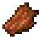
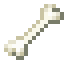
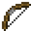
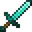
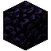
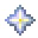
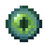

Blocos que flutuam na mão e dão poderes elementais.

Bloco de Fogo
Um bloco de magma que gira sobre a mão. Dá resistência ao fogo enquanto está na mão.
Bancada de trabalho
➜ Variante vermelha
Coloque o bloco no Nature Infuser com um Bloco de Redstone na alimentação: o bloco vira magma vermelho e todos os ataques (chamas, bola de fogo, cogubrilho) ficam vermelhos.
Nature Infuser
em cima: entrada · embaixo: alimentação
| Ação | Efeito | Mana |
|---|
| Segurar direito | Lança-chamas em cone (12 blocos, abre até 3x3) | 1 a cada 5s |
| Bater | Bola de fogo explosiva que não quebra blocos | 1 |
| Shift + bater | Explosão de chamas em volta que empurra forte | 1 |
| Shift + segurar direito | Carrega um cogubrilho gigante; solte para lançar | 3 |

Bloco de Spawner
Invoca aliados. Combine com uma tinta para mudar a cor do concreto que gira dentro dele.
Bancada de trabalho







| Ação | Efeito | Mana |
|---|
| Bater olhando uma criatura | Marca o alvo das invocações | — |
| Direito | Cabeça de esqueleto que invoca um esqueleto | 1 |
| Shift + bater | Cabeça de zumbi que invoca um zumbi | 1 |
| Shift + direito | Esqueleto campeão com cópia da sua armadura e da sua arma | 3 |
Máximo de 8 invocações, que duram 90 segundos.
Bloco de Void
O poder do nada. Em qualquer mão dá um voo instável (nunca fica parado no ar).
Bancada de trabalho




| Ação | Efeito | Mana |
|---|
| Segurar direito | Buraco negro sobre a cabeça que puxa tudo e explode ao soltar | — |
| Shift + segurar direito | Lança o buraco negro, arrastando criaturas e corrompendo blocos | — |
| Bater | Projétil que corrompe os blocos atingidos | — |
| Shift + bater | Agarra uma criatura; ela segue a sua mira. Bata de novo para arremessar | — |
Blocos corrompidos ficam intangíveis por 15 segundos e depois voltam ao normal.

Bloco de Gelo
Domínio do gelo. Em qualquer mão: desliza em todos os blocos como no gelo e anda sobre água e lava.
Nature Infuser
 ➜
➜em cima: entrada · embaixo: alimentação
| Ação | Efeito | Mana |
|---|
| Segurar direito | Jato congelante que deixa lento | 1 a cada 5s |
| Shift + direito | Tempestade de neve (10s): atrapalha a visão dos outros, deixa lento e congela | 3 |